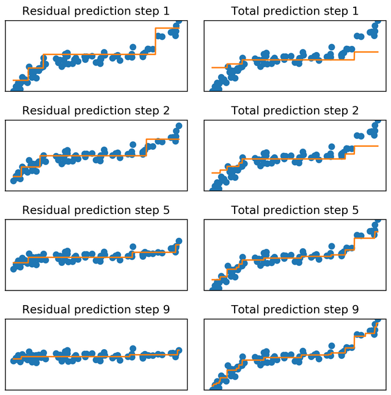

flowchart LR A(Maximum
temprature) --> B{Humidity > 0.3} B -->|Não| H{< 15} B -->|Sim| C{Preassure > 0.5} -->|Sim| G(< 20) C -->|Não| D{> 20}
Árvore hipotética
Ensemble: stacking, bagging, boosting
Até agora no curso, usamos abordagens simples de aprendizagem supervisionada: treinamos um ou mais modelos, os validamos e, do melhor deles, derivamos predições. Nesta aula, veremos uma abordagem mais sofisticada: combinar diferentes modelos, o que é chamado de ensemble em aprendizado de máquina.
Nesta aula, estudaremos as três formas mais comuns de combinação de modelos – bagging, stacking e boosting – e veremos em quais situações cada uma é mais indicada. Abaixo, um quadro com um resumo das abordagens que estudaremos:
| Ensemble | Descriçao |
|---|---|
| Bagging | Treina-se \(N\) modelos em variaçoes da amostra (bootstrap, subsamples, feature bagging, etc.) |
| Stacking | Treina-se \(N\) modelos diferentes, combinados por meio de um segundo modelo (ou blender) |
| Boosting | Treina-se \(N\) modelos sequencialmente, cada um corrigindo os erros do anterior |
Combinar modelos para melhorar predições é algo que, apesar fazer sentido intuitivamente, não é facilmente implementável. Como combinar modelos? Fazemos uma média de diferentes modelos? O quão diferentes precisam ser os modelos? Há uma variedade de respostas a essas perguntas, mas vale começarmos pelo exemplo que exploramos na última aula: usar árvores de decisão para predizer a temperatura máxima diária em São Bernardo do Campo.
Como vimos, uma árvore de decisão para esse problema poderia fazer predições usando este diagrama:
flowchart LR A(Maximum
temprature) --> B{Humidity > 0.3} B -->|Não| H{< 15} B -->|Sim| C{Preassure > 0.5} -->|Sim| G(< 20) C -->|Não| D{> 20}
Árvore hipotética
Agora imagine que customizamos a regra de splits do modelo e produzimos outra árvore, assim:
flowchart LR A(Maximum
temprature) --> B{Preassure > 0.5} B -->|Não| H{> 15} B -->|Sim| C{< 15}
Árvore hipotética II
Árvores de decisão são boas opções para evitar viés porque, de forma não-paramétrica, encontram relações não-lineares e interações profundas – mas isso ao custo de frequentemente termos overfitting e alta variância, isto é, diferentes árvores treinadas em diferentes amostras podem resultar em modelos muito diferentes que não generalizam bem para unseen data. O exemplo acima, embora fictício, ilustra o problema.
Mas e se, em vez de treinarmos uma única árvore de decisão, treinarmos \(N\), com diferentes variações, e combinarmos seus resultados tirando uma média de suas predições? Resumidamente, esta é a ideia central por detrás do bagging. Usando bootstrap, sorteamos \(N\) observações de uma amostra, onde \(N\) é o número de observações na mesma amostra, com substituição e treinamos um árvore para cada. Ao final, usamos cada árvore para fazer predições na amostra de teste e as agregamos por média (caso de problemas de regressão) ou por frequência (caso de problemas de classificação) – averaging e voting, como essas formas de agregação são conhecidas, respectivamente.
Há variações na implementação do bagging. É possível, por exemplo, usar bootstrap puro, mas também sortear apenas um percentual das observações de uma amostra, o que é chamado de subsampling1; para evitar que apenas variáveis importantes pesem na construção de árvores (em geral, estas ocupam o primeiro nó nas árvores), também é comum sortear um sub-conjunto de features para cada split, o que é chamado de feature bagging ou feature sampling. Por ser flexível, o método permite diferentes customizações.
1 Algo útil é usar observações que ficaram de fora de cada sorteio, chamadas de out-of-bag, para calcular métricas de valiação; no sklearn, isso é possível diretamente por meio de um dos argumentos de BaggingRegressor ou BaggingClassifier.
A vantagem principal do bagging é reduzir a variância em predições. Como árvores diferentes, treinadas em partes diferentes de uma amostra, podem captar diferentes padrões ao custo de overfitting, combinar vários significa dar peso a predições que ocorrem na maioria das árvores treinadas. Como resume o ITSL:
Bagging has been demonstrated to give impressive improvements in accuracy by combining together hundreds or even thousands of trees into a single procedure. ITSL, p. 341
O resultado disso geralmente é bem visível: melhora em métricas de validação, como podemos ver em um exemplo simples de regressão, usando a nossa já conhecida base de dados climáticos de São Bernardo do Campo:
# Carrega pacotes
library(tidyverse)
library(mlr3verse)
# Carrega dados
link <- "https://raw.githubusercontent.com/jacobwright32/Web_Scraper_AI_Core_Project/bb4865ae568e23ab8fadb6ea58cf117df2164ef3/web%20scraping/Cleaned%20Data/Brazil_Sao%20Bernardo%20Do%20Campo_Cleaned.csv"
dados <- readr::read_csv(link) %>%
select_if(is.numeric)
# Define a task
tsk <- as_task_regr(maximum_temprature ~ ., data = dados)
# Cria uma pipeline com arvore de decisao
gr <- po("scale") %>>%
po("learner", learner = lrn("regr.rpart")) %>%
as_learner()
# Cria uma pipeline com bagging (sumsample + bootstrap)
gr_bagging <- po("subsample", frac = 1, replace = TRUE) %>>%
po("learner", learner = lrn("regr.rpart")) %>%
ppl("greplicate", ., 10) %>>%
po("regravg", innum = 10) %>%
as_learner()
# Treina as pipelines
design <- benchmark_grid(
tasks = tsk,
learners = list(gr, gr_bagging),
resamplings = rsmp("holdout", ratio = 0.7)
)
resultados <- benchmark(design)
resultados$score(msr("regr.rmse"))from sklearn.model_selection import train_test_split
from sklearn.tree import DecisionTreeRegressor
from sklearn.metrics import mean_squared_error
from sklearn.ensemble import BaggingRegressor
import pandas as pd
# Carrega dados e separa as amostras
link = 'https://raw.githubusercontent.com/jacobwright32/Web_Scraper_AI_Core_Project/bb4865ae568e23ab8fadb6ea58cf117df2164ef3/web%20scraping/Cleaned%20Data/Brazil_Sao%20Bernardo%20Do%20Campo_Cleaned.csv'
dados = pd.read_csv(link).select_dtypes(['number'])
Y = dados['maximum_temprature']
X = dados.loc[:, dados.columns != 'maximum_temprature']
X_treino, X_teste, Y_treino, Y_teste = train_test_split(X, Y)
# Treina os modelos
arvore = DecisionTreeRegressor().fit(X_treino, Y_treino)
bagging = BaggingRegressor(
base_estimator=DecisionTreeRegressor(),
n_estimators=10,
).fit(X_treino, Y_treino)
# Calcula metricas
pred_arvore = arvore.predict(X_teste)
mean_squared_error(Y_teste, pred_arvore)
pred_bagging = bagging.predict(X_teste)
mean_squared_error(Y_teste, pred_bagging, squared=False)As grandes novidades aqui são que, em R, usamos po("subsample", frac = 1, replace = TRUE) para criar bootstraps na amostra, ppl("greplicate", ., 10) para replicar o procedimento 10 vezes e, por fim, po("regravg", innum = 10) para agregar diferentes predições. Em Python, o processo é basicamente o mesmo – uma das vantagens do framework ser mais maduro é a consistência de código –, mas usamos BaggingRegressor, que permite usar bootstrap, subsample e feature bagging.
Como é possível checar na documentação dos frameworks que usamos, bagging permite muitas adaptações: é possível usar diferentes modelos (não apenas árvores), com diferentes hiper-parâmetros e estratégias de resampling as mais variadas.
Pela sua popularidade, vale reservar um espaço para detalhar um dos algoritmos de bagging: random forest. Como o nome sugere, elas nada mais são do que árvores, combinadas por meio de ensemble, que são treinadas em variações da amostra (com subsample) e variações de features (feature bagging) simultaneamente. Assim, acabamos com árvores que se especializam em predizer determinadas partes da amostra utilizando diferentes preditores – o que evita que uma ou poucas variáveis acabem resultado em modelos similares, isto é, que tenhamos árvores correlacionadas. Nesse sentido, random forest incentiva a produção de modelos os mais diferentes2 para, depois, combiná-los.
2 Na verdade, há variações do algoritmo que geral splits de forma totalmente aleatória (extreme random forest, por exemplo), mas em geral performam pior.
Podemos implementar random forest da seguinte forma:
# install.packages("randomForest")
library(mlr3extralearners)
gr <- po("learner", learner = lrn("regr.randomForest", ntree = 50)) %>%
as_learner()
design <- benchmark_grid(
tasks = tsk,
learners = list(gr),
resamplings = rsmp("holdout", ratio = 0.7)
)
resultados <- benchmark(design)
resultados$score(msr("regr.rmse"))from sklearn.ensemble import RandomForestRegressor
rf = RandomForestRegressor(n_estimators=50)\
.fit(X_treino, Y_treino)
pred = rf.predict(X_teste)
mean_squared_error(Y_teste, pred, squared=False)Ao usar bagging com árvores (o mais comum), considere sempre treinar o maior número de árvores possível
Por usar split rules e permitir combinações complexas e não-aleatórias, árvores de decisão geralmente não requerem normalização de variáveis contínuas
Como vimos, bagging agrega predições de diferentes modelos – não apenas árvores, emboras bagged trees seja a aplicação mais comum deste ensemble. Em stacking, fazemos a mesma coisa, usando basicamente o mesmo procedimento, com a exceção de que empregamos um modelo para agregar predições feitas pelos modelos treinados no primeiro estágio. Em vez de calcular uma média ou a moda, portanto, stacking treina um novo modelo para mapear predições dos seus modelos constitutivos.
Do ponto de vista de implementação, stacking funciona da seguinte forma3: separamos três amostras, 2 de treino e uma de teste; treinamos \(N\) modelos de nível 0 na primeira amostra de treino; fazemos predições usando esses \(N\) modelos para a segunda base de treino; treinamos um modelo de nível 1 para agregar as predições do primeiro estágio; finalmente, fazemos predições para a base de teste e calculamos métricas de validação. Visualmente, isso resulta no seguinte workflow:
3 Há variações nessa implementação; com sklearn, por exemplo, o padrão é se usar Kfold cross-validation, algo que veremos em aulas posteriores, para gerar predições para todas as observações na amostra de treino sem muitos leaks. A ideia que está descrita aqui é mais próxima do conceito de blending, popularizada por uma competição criada pela Netflix para melhorar seus algoritmos de recomendação.

Tradicionalmente, stacking é usado com algoritmos diferentes, às vezes com hiper-parâmetros diferentes, de forma a fazer com que tenham baixa correlação entre si, isto é, que suas predições sejam intencionalmente muito diferentes – o que dá variação suficiente que pode ser útil para criar um ensemble mais complexo. Além disso, é comum usar um blender simples, como regressão linear ou regressão linear com regularização, o que ajuda a dar menor peso para modelos nível 0 que não contribuem muito com a performance do stack ensemble.
A título de exemplo, podemos montar um ensemble stacking que usa regressão linear simples, KNN e random forest4 para predizer a temparatura máxima em São Bernardo do Campo:
4 Como dá para ver, é possível usar um ensemble dentro de outro
# Cria modelos que retornam predicoes out-of-sample ("learner_cv")
gr <- po("scale") %>>%
po("learner", learner = lrn("regr.lm")) %>%
po("learner_cv", .)
gr_kknn <- po("scale") %>>%
po("learner", learner = lrn("regr.kknn")) %>%
po("learner_cv", .)
gr_rf <- po("learner", learner = lrn("regr.randomForest", ntree = 50)) %>%
po("learner_cv", .)
# Cria o ensemble
stack <- list(gr, gr_kknn, gr_rf) %>%
gunion() %>>% # Une os modelos
po("featureunion") %>>% # Une as predicoes
po("learner", learner = lrn("regr.lm")) %>% # Faz predicoes finais
as_learner()
design <- benchmark_grid(
tasks = tsk,
learners = list(stack),
resamplings = rsmp("holdout", ratio = 0.7)
)
resultados <- benchmark(design)
resultados$score(msr("regr.rmse"))from sklearn.linear_model import LinearRegression
from sklearn.neighbors import KNeighborsRegressor
from sklearn.ensemble import RandomForestRegressor
# Treina os modelos
modelos = [('lm', LinearRegression()),
('kknn', KNeighborsRegressor()),
('rf', RandomForestRegressor(n_estimators=50))
]
stack = StackingRegressor(estimators=modelos, final_estimator=LinearRegression())\
.fit(X_treino, Y_treino)
# Calcula metricas
pred = stack.predict(X_teste)
mean_squared_error(Y_teste, pred, squared=False)Em R, como dá para notar, o processo é bem mais complexo do que em Python, razão pela qual pode ser útil consultar a seção específica sobre isso no livro do framework.
Vale dizer também que o ITSL não cobre stacking – a bem da verdade, poucos livros dedicam muito espaço a ele –, mas é algo útil por ser uma ferramenta extremamente flexível e, também, por ser uma versão similar de outros métodos de ensemble mais avançados, como BMA (Bayesian Model Averaging), que não cobriremos neste curso.
Diferentemente de bagging e stacking, que treinam modelos fracos (weak learners) e combinam suas predições, boosting treina modelos fracos de forma sequencial, com cada novo modelo aprendendo a corrigir os principais erros feitos pelo anterior. Assim, ao final da fase de treino dos \(N\) modelos o que temos é um conjunto ordenado de modelos que fazem predições voltadas a reduzir diferentes tipos de erro – consequentemente, minimizando viés e, em certa medida, também variância.
Em sua versão mais conhecida, chamada de gradient boosting, o processo de treino do ensemble repete algumas vezes o seguinte fluxo: treina-se um modelo qualquer nos dados (árvore de decisão simples é o mais comum), faz-se predição na amostra de treino e calcula-se os resíduos; usando os resíduos como target, treina-se nova árvore. Repetindo esse procedimento algumas vezes, basta somar as predições de cada modelo individual na amostra de teste para se obter uma predição final5. O diagrama a seguir mostra um exemplo do processo:
5 Há outra versão popular de boosting, que é implementada pelo conhecido AdaBoost, que em vez de usar os resíduos dos modelos usa pesos na estimação de novas predições.

Assim como no caso do random forest, boosting geralmente é implementado por um algoritmo sem maior necessidade de adaptação de código. Podemos estimar modelos com boosting usando extreme gradient boosting, uma das versões mais rápidas e otimizadas para predição, e implementações comuns de gradient boosting usando:
gr_xgboost <- po("learner", learner = lrn("regr.xgboost", nrounds = 50)) %>%
as_learner()
gr_gbm <- po("learner", learner = lrn("regr.gbm", n.trees = 50)) %>%
as_learner()
design <- benchmark_grid(
tasks = tsk,
learners = list(gr_xgboost, gr_gbm),
resamplings = rsmp("holdout", ratio = 0.7)
)
resultados <- benchmark(design)
resultados$score(msr("regr.rmse"))# Necessário instalar o xgboost, que não
# faz parte do sklearn
from xgboost import XGBRegressor
from sklearn.ensemble import GradientBoostingRegressor
# Treina os modelos
gb = GradientBoostingRegressor(n_estimators=50)\
.fit(X_treino, Y_treino)
xgb = XGBRegressor(n_estimators=50)\
.fit(X_treino, Y_treino)
# Calcula metricas
pred = gb.predict(X_teste)
mean_squared_error(Y_teste, pred, squared=False)
pred = xgb.predict(X_teste)
mean_squared_error(Y_teste, pred, squared=False)Embora bagging, stacking e boosting sejam, de longe, os tipos mais utilizados de emsemble, existem diversas outras maneiras de se combinar modelos. Um bom material de referência para o Bayesian Averaging, uma aplicação que cresceu na Ciência Política, pode ser vista aqui.